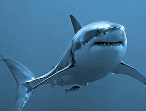
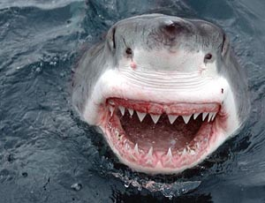

Diese Art stellt den eigentlichen Superräuber dar. Kein anderer Hai ist mit diesem Tier vergleichbar. Obwohl sie normalerweise eher langsam schwimmen, sind sie in der Lage auch schnellste Tiere wie Makohaie, Thun- und Schwertfische oder auch Delphine zu erbeuten. Weiße Haie sind entgegen vielen anderen Haiarten nicht eigentlich kaltblütig (Körpertemperatur entspricht der Wassertemperatur), sondern besitzen ein spezielles Netz von Blutgefässen, das es ermöglicht, eine erhöhte Körpertemperatur aufrechterhalten können (zwischen 10-15°C über der Wassertemperatur). Dieses Netz findet sich vorwiegend in den Flanken der Tiere, aber auch um die Augen, sowie um das Gehirn herum. Gerade die Augen und die Nase sind bei Weißen Haien, verglichen mit anderen Haiarten, überdurchschnittlich entwickelt. Weiße Haie sehen farbig. Die erhöhte Körpertemperatur ermöglicht aber nicht nur eine schnellere Schwimmweise, sondern befähigt sie auch in kälteren Gewässern zu schwimmen. Entgegen früheren Ansichten sind Weiße Haie nicht diese oftmals zitierten Alleingänger, sondern tauchen nicht selten in kleineren Gruppen auf. Es besteht kein Zweifel mehr daran, dass es sich bei Weißen Haien um soziale Tiere handelt. Zur Ernährung des Weißen Hais gehören Seehunde, Seelöwen, Meeresschildkröten, Thunfische, Schwertfische, Haie (Makohaie, Hundshaie, Grauhaie, Hammerhaie, Dornhaie), aber auch Vögel (Pinguine), Tintenfische und auch tote Tiere. Weiße Haie ändern ihre Nahrung mit zunehmender Größe. Junge Weiße Haie sind eher auf Fische spezialisiert sind, da sie noch nicht diese typischen, gesägten Zähne besitzen, die ein Fressen von Tieren wie Seehunden ermöglicht. Erstaunlicherweise fressen große Weisse Haie nur sehr sporadisch, wahrscheinlich nur monatlich, oder mit noch größerem Abstand, abhängig von der Größe der Beute. Sie können eine Größe von mehr als 700cm (basierend auf Bissspuren an Walkadavern) erreichen. Tiere zwischen 580 und 640cm wogen mehr als 2000kg.
 15.11.2011